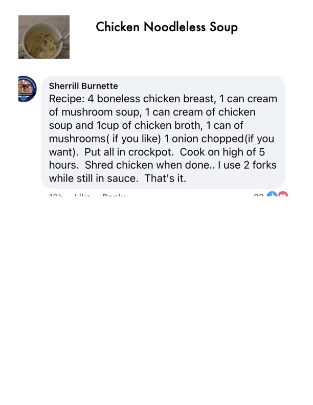

Chicken Noodleless Soup

Original cookbook page 187
A simple, low-carb crockpot chicken soup made with creamy soup bases and shredded chicken — no noodles required.
Prep: 5-10 minutes • Cook: 5 hours • Total: 5 hours 10 minutes
Ingredients
- 4 boneless chicken breasts
- 1 can cream of mushroom soup
- 1 can cream of chicken soup
- 1 cup chicken broth
- 1 can of mushrooms (optional)
- 1 onion, chopped (optional)
Instructions
- Place all ingredients into a crockpot.
- Cook on high for 5 hours.
- When done, shred the chicken using 2 forks while still in the sauce.
- Stir and serve.
Recipe #187 from collection